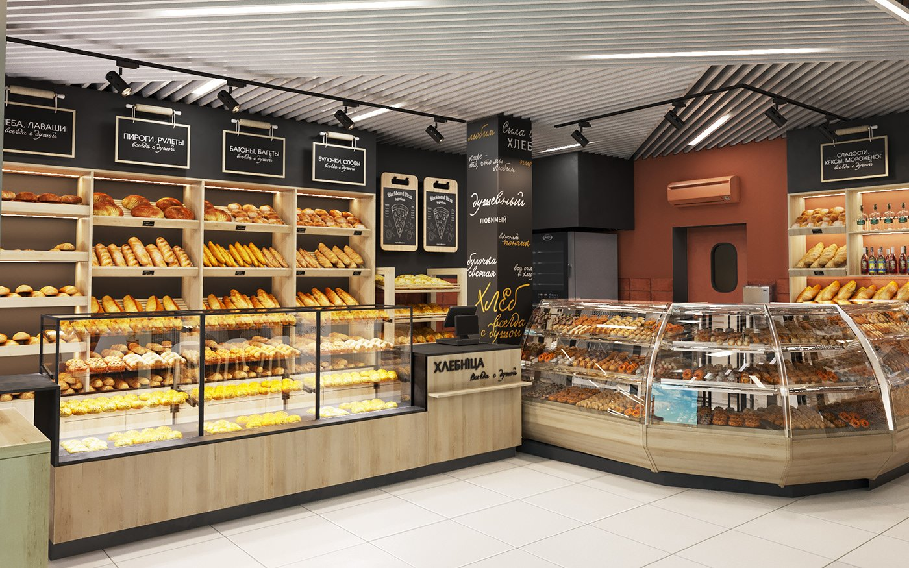

Welcome to Bakers Delight

Bakers Delight started in 2025 with a passion for baking.What began as a small home baking idea has grown into a business dedicated to providing fresh,affordable baked goods to the community with love.
Our Mission and Vision
Mission
- To become a popular and trusted bakery in the community and build a strong reputation for quality and service.
- To source fresh, local ingredients to ensure every loaf and pastry meets the highest standards of taste.
- To create a warm and welcoming environment where every customer feels like part of the Bakers Delight family.
Our Vision
- To become popular and trusted bakery in the community.
- To build a strong reputation for quality and good service.
- To grow the bakery and offer more products in the future.